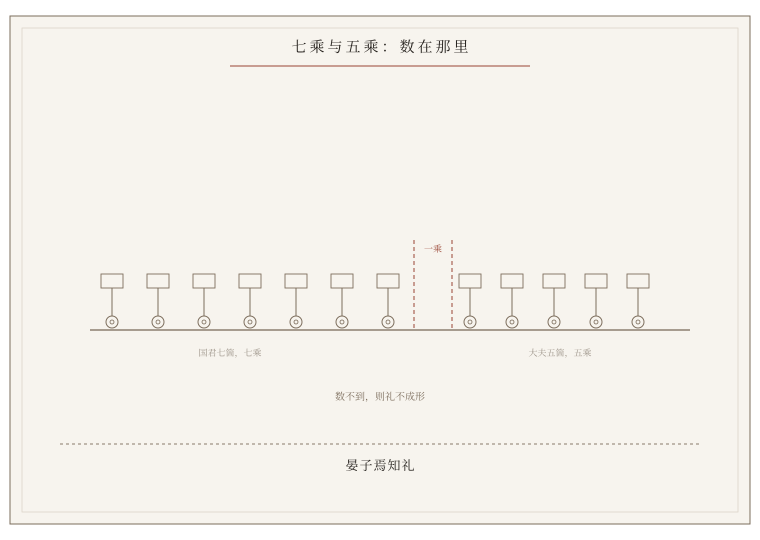

檀弓下 · 四·四十 · 第 365 课
曾子曰：「晏子可谓知礼也已，恭敬之有焉。」有若曰：「晏子一狐裘三十年，遣车一乘，及墓而反。国君七个，遣车七乘，大夫五个，遣车五乘。晏子焉知礼？」曾子曰：「国无道，君子耻盈礼焉。国奢则示之以俭，国俭则示之以礼。」
说什么事：曾子称晏子懂礼，恭敬是有的。有若驳他：晏子一件狐裘穿三十年，遣车只用一乘，到墓就折返；依礼，国君七包七乘，大夫五包五乘——这还算懂礼？曾子答：国无道的时候，君子以「把礼做满」为耻。国奢，就示之以俭；国俭，就示之以礼。
落在哪一层：以「时」量礼。论礼之满与不满，须看这个国家当日在什么位置上。
为何编在此位：上节论一身之节，此节论一国之势。由一己之敬，进到一国之矫。
【经】曾子曰：「晏子可謂知禮也已，恭敬之有焉。」有若曰：「晏子一狐裘三十年，遣車一乘，及墓而反。國君七箇，遣車七乘，大夫五箇，遣車五乘。晏子焉知禮？」曾子曰：「國無道，君子恥盈禮焉。國奢則示之以儉，國儉則示之以禮。」
【注】言禮者，敬而已矣。／言其大儉偪下，非之。及墓而反，言其既窆則歸，不留賓客有事也。人臣賜車馬者，乃得有遣車。遣車之差，大夫五，諸侯七，則天子九。諸侯不以命數，喪數略也。箇，謂所包遣奠牲體之數也。《雜記》曰：「遣車視牢具。」／時齊方奢，矯之是也。
【疏】此一节论晏子故为非礼以矫齐之事。有子者，孔子弟子有若也。闻曾子说晏子知礼，故举晏子不知礼之事以拒曾子也。狐裘贵在轻新，而晏子一狐裘三十年，是俭不知礼也。「遣车一乘」者，其父晏桓子是大夫，大夫遣车五乘，其葬父唯用一乘，又是俭失礼也。／「及墓而反」者，「及墓」谓葬时也。礼，窆后孝子赠币辞亲，辞亲毕，而亲情宾客应是送别，别竟乃反。于时晏子窆竟则反，宾客并去，又是俭失礼也。／「国君七个，遣车七乘，大夫五个，遣车五乘」者，此更举正礼以证晏子失礼也。「个」谓所包遣奠牲体臂臑也，折为七段五段，以七乘五乘遣车载之。／「大俭」解三十年一狐裘，并「及墓而反」也。「偪下」解一乘也。「下」谓其子及凡在己下者也。大夫五乘，适子三乘，今其父自用一乘，则其子更无，是「偪下」也。
晏子 晏婴，齐大夫。其父晏桓子。
狐裘 狐皮之裘，以轻新为贵。
遣车 送葬所用之车，载所包遣奠之牲体。
个 注「所包遣奠牲体之数」。一包为一「个」。
及墓而反 到墓即返。注云「既窆则归，不留宾客有事」。
偹下／偪下 逼，迫也。谓贬损过甚，使在下者无以为继。
盈礼 把礼做满、做足。
示之以俭 以俭示人，为国之矫。
国无道 国之政失常度。
曾子说：「晏子可算懂礼了，恭敬是有的。」有若说：「晏子一件狐裘穿三十年，遣车只用一乘，到墓就折返。国君七包、遣车七乘，大夫五包、遣车五乘。晏子怎么算懂礼？」曾子说：「国无道的时候，君子以把礼做满为耻。国奢，就以俭示人；国俭，就以礼示人。」
此章是一场辩论：一个说「他懂礼」，一个说「他不合礼」，第三个说「你们都没看他在什么国里」。
三段话，三个层次：敬、数、时。
第一层 曾子的第一句：礼者，敬而已矣 注把曾子的话说得极简：「言礼者，敬而已矣。」
在曾子看来，礼之实是敬，敬之实是恭。晏子之行，其敬可验，故曰知礼。
此一标准是「看心」。而下一个标准，是「看数」。
第二层 有若的驳：数在那里 有若列的全是数：三十年、一乘、七包七乘、五包五乘。
礼有明文之数，数不到，则礼不成形。此一标准是「看物」。
两个标准各有所长：只看心则礼可任意，只看数则礼成空壳。
第三层 曾子的转：看时 曾子不辩数，只答一句「国无道，君子耻盈礼焉」。
把问题从「他合不合礼」转到「这个国家配不配有人把礼做满」。
此一转极狠：不是晏子不够，是齐国当时容不下那么足。
第四层 国奢示俭，国俭示礼：矫世之法 注云「时齐方奢，矫之是也」。
奢则示俭，俭则示礼——同一人，处在不同之国，所做正相反。
故礼之行，不只问「应该怎样」，还须问「此时此地最缺哪一样」。
缺俭，则虽失数而有益；缺礼，则虽从俗而害大。
第五层 偪下：俭的边界 郑注仍留一句重话：「偪下」。
父用一乘，则适子三乘之数无所出——俭到自己，害到在下者。此俭之过。
故矫世之俭，也有其限：可以自薄，不可以使人无位。 这一条，曾子未及，郑补之。
与今日何干 今之团体、家庭、机构，多有「以俭矫奢」之举：减预算、省仪节、去排场。
此节给两条尺：一看此时缺什么，二看此减伤了谁。缺奢则减得当，减到人无位则过。
| 左 | 右 |
|---|---|
| 敬 | 礼之实 |
| 数 | 礼之形 |
| 一狐裘三十年 | 俭之极 |
| 遣车一乘 | 数之不足 |
| 及墓而反 | 不留宾客 |
| 七包七乘 | 国君之数 |
| 五包五乘 | 大夫之数 |
| 偪下 | 俭之过 |
| 国奢示俭 | 矫世之法 |
画一条横列的遣车队伍，视点略侧。左段画七辆车，每车间距均匀；右段画五辆车，间距稍宽；两段之间留一道明显的空档，不画连线。每辆车上各置一束包扎的牲体（以横置的短矩形示意），车下各一车轮。画面左下角另画一件叠得极旧的皮裘，裘上补丁三道。赭色只用在空档处那束牲体的捆绳上。
